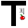

These are the projects that are part of Fatiando a Terra:
Software
-
Fatiando a Terra:
A Python package for geophysical modeling
and inversion.
Contains various algorithms and facilities for developing inverse
problems.
-
Tesseroids:
Commandline tools for forward modeling of gravitational fields in
spherical coordinates.
Lecture notes, slides, texts
-
Inverse
problems in geophysics:
Lecture notes, slides and exercises about practical inverse problems in
geophysics. Uses software Fatiando a Terra for the exercises.